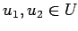
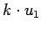
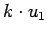
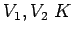
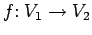
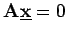
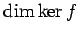
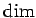
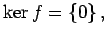

Unterräume, Dimensionsformel
- 1. Unterraum:
- Es sei V ein Vektorraum und U eine Teilmenge von V. Bildet U bezüglich der Operationen aus V einen Vektorraum, so heißt U ein Unterraum von V.
Eine nichtleere Teilmenge U von V ist genau dann Unterraum, wenn für alle  und alle  auch u1+u2 und  in U liegen (Unterraumkriterium).
auch u1+u2 und  in U liegen (Unterraumkriterium).
- 2. Kern, Bild:
- Es seien -Vektorräume. Ist  eine lineare Abbildung, so sind die Unterräume Kern (Bezeichnung: ker f) und Bild (Bezeichnung: im f) wie folgt definiert:
So ist zum Beispiel die Lösungsmenge eines homogenen linearen Gleichungssystems  der Kern der durch die Koeffizientenmatrix  vermittelten linearen Abbildung.
vermittelten linearen Abbildung.
- 3. Dimension:
- Die Dimension  bzw.  im f werden Defekt f bzw. Rang f genannt. Zwischen diesen Dimensionen besteht der Zusammenhang
der Dimensionsformel genannt wird. Ist speziell Defekt f=0, d.h.  dann ist die lineare Abbildung f injektiv und umgekehrt. Injektive lineare Abbildungen werden regulär genannt.